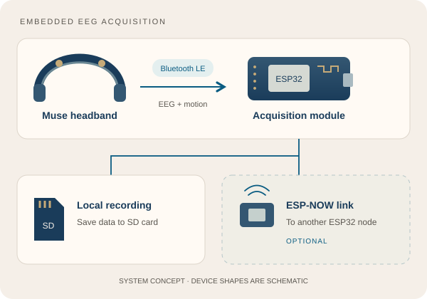

MuseCroc: Embedded EEG Acquisition
Collaborative ESP32-based acquisition of EEG and motion data directly from Muse headbands, with SD storage and optional ESP-NOW communication.
My role: system integration, acquisition architecture and experimental testing, with minor firmware contributions and embedded troubleshooting. Developed collaboratively with Aydin Hosseingholizadeh, who made foundational implementation contributions.
